CancerNet provides current and accurate cancer information from the National Cancer Institute (NCI), the Federal Government's principal agency for cancer research. The site contains comprehensive, peer-reviewed information on many types of cancer, cancer treatment, cancer genetics, causes, risk factors, prevention and more. The audience for this site is broad and includes anyone with a question about cancer, including patients, their families/caregivers, health care professionals, and cancer researchers.
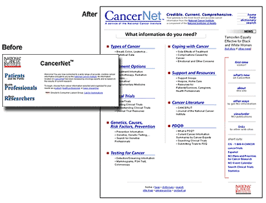
Data Collection and User Analysis
Gathering data from and about your users is one of the first steps in applying usability engineering to the design/redesign process. We needed to know who our users were, what information they needed and expected to find, and why they visited the site.
Techniques for Data Collection
An analysis of online user data drove the development of the overall site structure, the types and priority of information displayed, and the organization and presentation of information on the site.
Lessons Learned
Online feedback forms return large amounts of data from users efficiently
- Feedback forms should be short, fewer than 10 questions.
- A mixture of specific and open-ended questions works best.
Survey example
Specific: In what state do you live?
Open: Describe any difficulties you encountered using the Web.
Individual interviews pinpoint the needs of specific groups of users and allow the interviewer to probe relevant topics. Interviewees selected may not have been represented in the online feedback such as, in this case, patients or certain health professionals.
Personal interview examples
Probe to a physician:
Do your patients bring you information from the Web?
How do you respond?
Probe to a patient:
How do you ask your physician for information?
How does your physician respond to your information requests?
Iterative Prototype Development
Prototypes provide a quick and cost-effective method of checking the site interface with users before committing extensive resources to the project. We analyzed the data from the online feedback form and interviews, and we developed a prototype for the overall site structure, the types and priority of information displayed, and the organization and presentation of information.
Techniques for Data Collection
An analysis of online user data drove the development of the overall site structure, the types and priority of information displayed, and the organization and presentation of information on the site.
Lessons Learned
1. Use a common signature/brand or logo to brand the site. Users need a frame of reference throughout the site so they know they are on your site. Each page needs a common signature or masthead across the top of the site that is constant throughout. See image below.
2. Put critical global navigation elements together in the same place on each page. Critical global navigation elements such as Home, Help, Dictionary, Search, need to be present on every page as aids to navigation. See image below.
3. Prioritize the information. Information should be presented in the order that users identified (in online feedback forms and interviews) as being most important. For example, the majority of users were most interested in information about different Types of Cancer . . . which is why this category is positioned in the top left of the page. See image below.
4. Separate critical core information from secondary information. Page layout must help users find the important information. Primary information should be placed in the center of the page. Secondary information should be placed less prominently on the page. See image below.
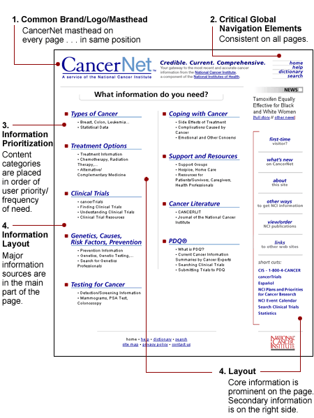
5. Package related information. All information related to one topic should be grouped in one place. This minimizes the need to search the site for related information. It also makes updating much easier. See image below.
6. Put a table of contents to be used as links at the top of each page of information. In our site, a table of contents with hyperlinks is located at the top of each cancer topic page. For example, links to all information on breast cancer, from treatment to publications, is on one page. See image below.
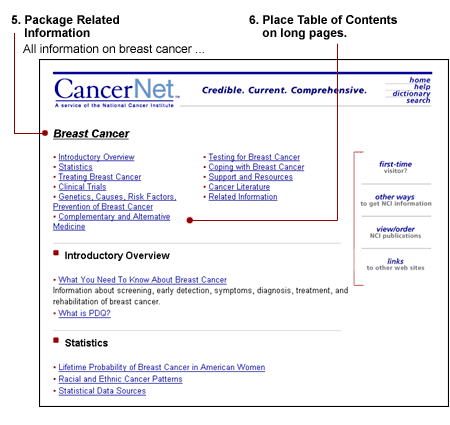
7. Provide multiple paths to the same information. Not all users search for information using the same paths. Different users try different ways to find information depending on their own interpretations of a page. Establishing several access points helps users find what they need no matter where they start. See image below.
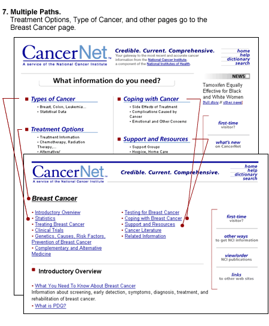
8. Use headings, subheadings, and lists. Users locate information faster when it is presented through headings, subheadings, and short bulleted phrases rather than in undifferentiated paragraphs. See image below.
Using subheadings ensures that some subcategories are not overlooked and also informs users of what they can expect to find. See image below.
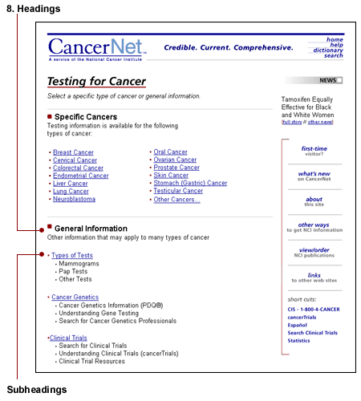
9. Raise information to the highest level. Critical information should be provided as close to the home page as possible. This minimizes the need to dig deep into the site, which may be difficult for some users. See image below.
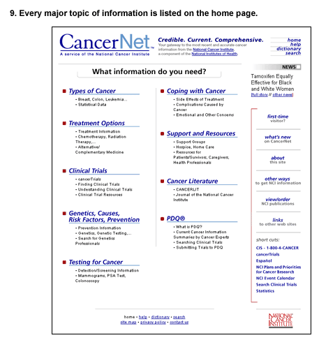
10. Provide assistance to first-time visitors. In our case, more than a third of respondents (36%) were first-time visitors. We created a page to give these users extra help in navigating the site. See image below.
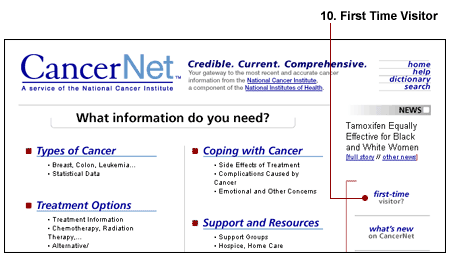
11. Provide easy access to all levels of information. Users wanted to see information for both the Health Professional and the Patient versions of the documents without first having to declare themselves as a health professional or a patient. We provided access to both documents from each cancer page. See image below.
12. Write simply and directly. Users want to get to the point as quickly as possible. They do not read paragraphs of information. They skim for hyperlinks so they can quickly accomplish their goals. We simplified the Publications Ordering page to bring publications categories up to the top level. See image below.
Before
Publications Index had numerous overlapping categories. It was not clear that you could order free publications through the site.
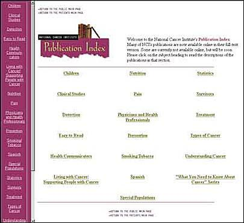
After
Topics are consolidated and don't overlap. The page layout and order of topics follow the same format as the rest of the site. It is clear that you can browse or order the publications.
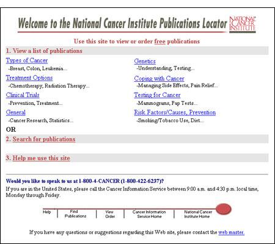
Usability Testing
Usability testing with actual users was important because it helped us uncover problem areas in the prototype. Also, it allowed us to evaluate alternative approaches by comparing different prototypes. It also helped us check graphic design decisions.
Techniques for Usability Testing
- Recruit test participants who match the profile of intended users.
- Have users/test participants perform actual tasks (i.e., search for specific information on the site).
- Ask probing questions to elicit additional information.
- Take detailed notes on what users do and say during tasks, such as time to complete the task, accuracy in locating information, and user satisfaction.
- Record the session on videotape for future use as a reference for specific design questions.
Lessons Learned
1. It is impossible to predict the range of responses from users. Users respond to questions from their own frame of reference. For example, we could not predict the way users searched for information. This showed us the importance of doing usability testing with actual users.
Scenario example
Question: Where would you look for information on cancer genetics professionals?
Answers:
User 1: I'd look in prevention.
User 3: I'll look in detection.
User 5: I'd look in resources.
2. Testing clarifies terminology. Terminology plays a large role in the user's ability to find and understand information. Usability tests showed that we were using unclear terminology and that we needed a resource that was always available to define terms. We added a glossary to the site and made it available on every page. When we found that users did not clearly understand the word "glossary," we changed it to "dictionary." We also found that users did not recognize the term "Screening," which we then changed to "Testing" for Cancer.
3. Complex user interactions need to be tested extensively. For example, the CancerNet PDQ Clinical Trials database requires the user to complete a complex search form. Users have to enter information into a variety of fields and choose from several selections. We tested several search form interfaces extensively before we found one that users were able to interact with successfully and understand the way search results were presented.
From testing the PDQ clinical trials search function, we learned that users needed the following:
- A separate user's guide (for less experienced users).
- Field labels with explanations as well as hyperlinks to more detailed explanations.
- Explanations when more than one item could be selected.
Additional Lessons Learned from Testing the CancerNet Web Site
1. Minimize scrolling on the page. Users sometimes missed information because it was below the end of the page window on the screen (below the fold). Not all users recognized that scrolling down was necessary to find the rest of the information. On long pages, provide a table of contents at the top of the page for within-page navigation.
2. Put keywords at the beginning of a heading. When they skimmed a list of documents, users missed information unless the first word in the title was a keyword. For example, the heading 'Breast Cancer and Pregnancy' was not easily found on the Breast Cancer page, but 'Pregnancy and Breast Cancer' was located more easily when users were asked to find information related to breast cancer and pregnancy.
3. Linking directly to information instead of linking to the top of a page or section containing the information. We discovered that users were not disoriented when a link took them directly to the information they wanted, even when it was in the middle of a long scrollable page. They did not need to be oriented to the top of a page or beginning of a topic.
Launching the Site
Introducing users to a redesigned Web site or a new Web site requires some preparation by both the developers and the users. Developers should notify their users about what changes will take place. Users need to understand the changes to use the new Web site effectively.
Techniques for Launching the Site
- Tell users what is happening and when the change will occur.
- On your current site, use high visibility screen space, such as the upper right corner, to announce changes.
- If you can, put an announcement on another site that is visited by the same audience.
- Announce the changes in email newsletters, print newsletters, or other print or electronic sources users may read.
Lessons Learned
1. Announce the changes in advance. Don't surprise your users. Announce the changes on the home page of your current Web site. Users don't know what to do when they are suddenly confronted with a new look or navigation structure. See image below.
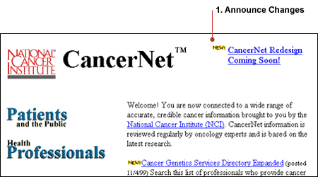
2. Show your users examples of how the new Web site will look and work. Add a page to your old Web site that shows examples of how the Web site will function. See image below.
3. Assure users that all the previous information will be there. Users who have become accustomed to coming to the site for a specific type of content will want to know that they can still use the site for that information. We told users that clinical trials information would still be available. See image below.
4. Tell users what new information you are adding to the site. Users want to know if a site they use will give them added value such as more or better information than what they've been getting. We told users that clinical trials information will still be available and that now they could search the database more precisely than they were able to do previously. See image below.
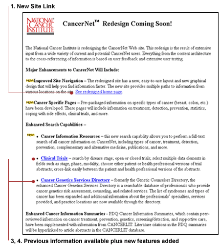